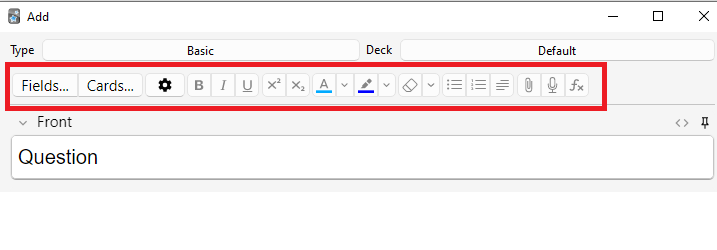
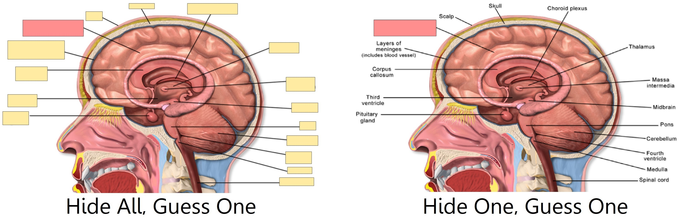

Додавання/редагування
- Додавання карток і нотаток
- Додавання типу нотатки
- Налаштування полів
- Зміна колоди / типу нотатки
- Організація контенту
- Функції редагування
- Приховування (Cloze Deletion)
- Приховування зображень
- Редагування IO нотаток
- Введення іноземних символів та акцентів
- Unicode Normalization
- Нормалізація Юнікоду
Додавання карток і нотаток
Згадайте з основ, що в Anki ми додаємо нотатки, а не картки, а Anki створює картки. Натисніть «Додати» в головному вікні, і з’явиться вікно «Додати нотатки.

Верхній лівий кут вікна показує поточний тип нотатки. Якщо там не написано «Базовий», можливо, ви додали деякі типи нотаток під час завантаження спільної колоди. У тексті нижче припускаємо, що вибрано «Базовий».
У верхньому правому куті вікна показано, до якої колоди буде додано картки. Якщо ви хочете додати їх до нової колоди, можете натиснути кнопку назви колоди, а потім «Додати».
Під типом нотатки ви побачите кілька кнопок і позначену область «Перед» і «Зад». Частини спереду та ззаду називаються полями, і ви можете додавати, видаляти та перейменовувати їх, натискаючи кнопку «Поля…» вище.
Під полями є інша область, позначена як «теги». Теги – це мітки, які можна прикріпити до нотаток, щоб полегшити впорядкування та пошук нотаток. Ви можете залишити теги порожніми, якщо бажаєте, або додати один чи декілька з них. Теги розділені пробілом. Якщо область тегів, наприклад, буде такою
vocab check_with_tutor
…тоді нотатка, яку ви додаєте, матиме два теги.
Коли введете текст спереду та ззаду, можете натиснути кнопку «Додати» або Ctrl+Enter (Command+Enter на Mac), щоб додати нотатку до своєї колекції. Коли зробите це, картка буде створена та розміщена у вибраній вами колоді. Якщо хочете відредагувати її, можете натиснути кнопку історії, знайти нещодавно додану картку в браузері.
Додаткову інформацію про кнопки між типом нотатки та полями дивіться у розділі Редактор.
Перевірка на дублікати
Anki перевіряє перше поле на унікальність, тому попередить, якщо ви захочете додати дві картки з однаковим значенням "apple" (наприклад) у полі "Передня сторона". Перевірка на унікальність обмежується поточним типом нотатки, тому якщо вивчаєте кілька мов, дві картки з однаковою "Передньою стороною" не будуть вважатися дублікатами, за умови, що ви використовуєте різні типи нотаток для кожної мови.
Anki не перевіряє інші поля на дублікати автоматично з міркувань ефективності, але в браузері є функція "Знайти дублікат", яку ви можете періодично запускати.
Ефективне навчання
Різні люди люблять переглядати матеріали різними способами, але є кілька загальних концепцій, про які слід пам'ятати. Відмінний опис можна знайти в цій статті на сайті SuperMemo.
Зокрема:
-
Не ускладнюйте: Чим коротші ваші картки, тим легше їх переглядати. Ви можете бути спокушені включити багато інформації "на всякий випадок", але перегляди швидко стануть неприємними.
-
Не запам'ятовуйте без розуміння: Якщо ви вивчаєте мову, намагайтеся уникати великих списків слів. Найкращий спосіб вивчення мов – це контекст, що означає бачити ці слова у реченні. Так само, уявіть, що ви вивчаєте комп'ютерний курс. Якщо ви намагатиметеся запам'ятати гору абревіатур, вам буде дуже важко просуватися вперед. Але якщо ви візьмете час для розуміння концепцій за абревіатурами, навчання абревіатур стане набагато легшим.
Додавання типу нотатки
Основні типи нотаток підходять для простих карток, де є лише одне слово або фраза з кожного боку. Але як тільки ви захочете включити більше ніж одну частину інформації на лицьовій чи зворотній стороні, краще розділити цю інформацію на кілька полів.
Можливо, ви подумаєте: "але я хочу лише одну картку, тож чому б не включити аудіо, зображення, підказку та переклад у поле Front?" Якщо вам так зручніше, це нормально. Але недолік такого підходу в тому, що вся інформація буде з’єднана разом. Якщо ви захочете відсортувати свої картки за підказкою, то не зможете цього зробити, оскільки вона змішана з іншими даними. Ви також не зможете, наприклад, перемістити аудіо з передньої частини на задню, окрім як копіювати і вставляти його для кожної нотатки. Розділивши контент на окремі поля, ви значно спростите коригування макету ваших карток у майбутньому.
Щоб створити новий тип нотатки, виберіть Інструменти → Керувати типами нотаток з головного вікна Anki. Потім натисніть "Додати", щоб додати новий тип нотатки. Тепер ви побачите інше вікно, яке дозволяє вибрати типи нотаток, на основі яких створити новий тип. "Додати" означає, що новий тип буде створено на основі типу, що входить до Anki. "Клонувати" означає, що новий тип буде створено на основі типу, що вже є у вашій колекції. Наприклад, якщо ви вже створили тип "French vocab", ви можете захотіти скопіювати його при створенні типу "German vocab".
Після вибору OK, вас попросять назвати новий тип. Назва, що відображає предмет вашого навчання, буде гарним вибором – такі як "Japanese", "Trivia" і так далі. Після вибору назви закрийте вікно Типи нотаток, і ви повернетесь до вікна додавання.
Налаштування полів
Щоб налаштувати поля, натисніть кнопку "Поля…" при додаванні або редагуванні нотатки, або коли тип нотатки обраний у вікні Керувати типами нотаток.

Ви можете додавати, видаляти або перейменовувати поля, натиснувши відповідні кнопки. Щоб змінити порядок відображення полів у цьому діалоговому вікні та у вікні додавання нотаток, ви можете скористатися кнопкою Змінити розташування, яка запитує числове положення, яке ви хочете присвоїти полю. Наприклад, якщо хочете зробити поле першим, введіть "1".
Не використовуйте "Tags", "Type", "Deck", "Card" або "FrontSide" як назви полів, оскільки це спеціальні поля, і вони не будуть працювати належним чином.
Параметри внизу екрана дозволяють редагувати різні властивості полів, які використовуються при додаванні та редагуванні карток. Це не місце для налаштування того, що відображається на ваших картках під час перегляду; для цього, будь ласка, перегляньте шаблони.
-
Редагування шрифту дозволяє налаштувати шрифт і розмір, що використовуються при редагуванні нотаток. Це корисно, якщо ви хочете зробити неважливу інформацію меншою або збільшити розмір іноземних символів, які важко прочитати. Зміни, які ви вносите тут, не впливають на те, як картки відображаються під час перегляду; для цього, будь ласка, перегляньте розділ шаблони. Однак, якщо ви увімкнули функцію "введення відповіді", текст, який ви вводите, буде використовувати розмір шрифту, визначений тут. (Для інформації про те, як змінити сам шрифт при введенні відповіді, перегляньте розділ перевірка вашої відповіді).
-
Сортувати за цим полем… вказує Anki відображати це поле у колонці сортування в оглядачі. Можете використовувати це для сортування карток за цим полем. Одночасно можна використовувати тільки одне поле для сортування.
-
Зворотний напрямок тексту корисний, якщо ви вивчаєте мови, які відображають текст справа наліво (RTL), такі як арабська або іврит. Ця настройка наразі контролює тільки редагування; щоб переконатися, що текст відображається правильно під час перегляду, вам потрібно налаштувати шаблон.
-
Використовувати редактор HTML за замовчуванням корисно, якщо ви віддаєте перевагу редагувати поля безпосередньо в HTML.
-
Згортати за замовчуванням. Поля можна згортати/розгортати. Анімацію можна вимкнути в налаштуваннях.
-
Виключити з некваліфікованих пошуків (повільніше) можна використовувати, якщо ви хочете, щоб вміст певного поля не з'являвся в некваліфікованих (не обмежених конкретним полем) пошуках.
Після додавання полів, ймовірно, ви захочете додати їх на передню або зворотню сторону ваших карток. Для отримання додаткової інформації про це, будь ласка, зверніться до розділу Шаблони.
Зміна колоди / типу нотатки
Під час додавання ви можете натиснути на кнопку в верхньому лівому куті, щоб змінити тип нотатки, а на кнопку в верхньому правому куті, щоб змінити колоду. Вікно, що відкриється, дозволить вам не лише вибрати колоду або тип нотатки, але й додати нові колоди або керувати вашими типами нотаток.
Організація контенту
Використання колод належним чином
Колоди призначені для розділення контенту на великі категорії, які ви бажаєте вивчати окремо, наприклад, англійська, географія тощо. Можливо, вас спокусить для впорядкування контенту створити багато маленьких колод, таких як "моя книга з географії, розділ 1" або "дієслова про їжу", але це не рекомендується з наступних причин:
-
Велика кількість маленьких колод може призвести до показу карток у впізнаваному порядку. На старіших версіях розкладу нові картки можуть бути представлені лише в порядку колоди. Якщо ви плануєте клацати по кожній колоді по черзі (що займає багато часу), ви побачите всі перегляди "розділу 1" або "дієслів про їжу" разом. Це полегшує відповіді на картки, оскільки ви можете вгадати їх з контексту, що призводить до поганого запам'ятовування. Коли потрібно буде згадати слово або фразу поза Anki, ви не завжди матимете розкіш спочатку бачити пов'язаний контент!
-
Хоча це менша проблема в порівнянні з попередніми версіями Anki, додавання сотень колод може призвести до уповільнення, а дуже великі дерева колод з тисячами елементів можуть фактично порушити відображення списку колод у версіях Anki до 2.1.50.
Використання Тегів
Замість створення великої кількості дрібних колод для класифікації контенту краще використовувати теги та/або поля. Теги є корисним інструментом для покращення пошуку, знаходження специфічного контенту та організації колекції. Існує багато способів ефективного використання тегів і прапорців, і заздалегідь продумане використання допоможе вам визначити, що буде найкращим для вас.
Деякі люди віддають перевагу організації карток за допомогою колод і дочірніх колод, але використання тегів має одну велику перевагу: ви можете додати кілька тегів до однієї нотатки, тоді як одна картка може належати лише до однієї колоди. Це робить теги більш потужною та гнучкою системою категоризації порівняно з колодами у більшості випадків. Ви також можете організовувати теги в деревоподібну структуру так само, як це робиться для колод.
Наприклад, замість створення колоди "дієслова про їжу", ви можете додати ці картки до вашої основної колоди для вивчення мови та позначити картки тегами "їжа" та "дієслово". Оскільки кожна картка може мати кілька тегів, ви можете, наприклад, шукати всі дієслова, всю лексику, пов'язану з їжею, або всі дієслова, що стосуються їжі.
Ви можете додавати теги у вікні редагування та у браузері, а також додавати, видаляти, перейменовувати або організовувати теги там. Зверніть увагу, що теги працюють на рівні полів, тобто коли ви тегуєте картку, яка має дітей, всі діти також будуть позначені. Якщо вам потрібно позначити лише одну картку, а не її дітей, варто розглянути можливість використання прапорців.
Використання Прапорців
Прапорці схожі на теги, але вони відображаються під час навчання у вікні перегляду, показуючи піктограму кольорового прапорця у верхньому правому куті екрана. Ви також можете шукати картки з прапорцями у вікні браузера, перейменовувати прапорці з браузера та створювати фільтровані колоди з карток із прапорцями. Проте, на відміну від тегів, одна картка може мати лише один прапорець одночасно. Інша важлива відмінність - прапорці працюють на рівні карток, тому встановлення прапорця на картці, яка має дітей, не вплине на них.
Ви можете встановлювати або знімати прапорці безпосередньо під час перегляду (натиснувши CTRL + 1-7 на Windows або CMD + 1-7 на Mac) або у браузері.
Тег "Marked"
Anki особливо обробляє тег під назвою "marked". У вікнах перегляду та браузера є опції для додавання та видалення цього тегу. У вікні перегляду буде показано зірочку, коли у примітки поточної картки є цей тег. А картки відображаються іншим кольором у вікні браузера, коли їхня примітка позначена.
Примітка: Маркування в основному залишено для сумісності зі старими версіями Anki; більшість користувачів захочуть використовувати прапорці замість цього.
Використання полів
Для тих, хто любить підтримувати порядок, ви можете додати поля до своїх приміток для класифікації контенту, наприклад, "книга", "сторінка" тощо. Anki підтримує пошук у конкретних полях, що означає, що ви можете виконати пошук за допомогою "книга:моя книга" сторінка:63 і миттєво знайти те, що вам потрібно.
Налаштування навчання та фільтровані колоди
За допомогою налаштування навчання та фільтрованих колод ви можете створювати тимчасові колоди на основі пошукових термінів. Це дозволяє переглядати свій контент змішаним у одній колоді більшість часу (для оптимальної пам'яті), але також створювати тимчасові колоди, коли потрібно зосередитися на конкретному матеріалі, наприклад, перед іспитом. Загальне правило таке: якщо ви завжди хочете мати можливість вивчати певний контент окремо, він має бути в звичайній колоді; якщо вам потрібно вивчати його окремо лише іноді (для іспиту, коли є відставання тощо), то краще використовувати фільтровані колоди, створені на основі тегів, прапорців, міток або полів.
Функції редагування
Редактор з'являється при додаванні нотаток, редагуванні нотатки під час огляду або перегляду.

Зліва зверху розташовані дві кнопки, які відкривають вікна поля та картки.
Справа розташовані кнопки для форматування. Жирний, курсив та підкреслення працюють так само, як у текстових процесорах. Наступні дві кнопки дозволяють вводити текст як нижній або верхній індекси, що корисно наприклад для хімічних сполук, як-от H2O, або простих математичних рівнянь, як-от x2. Далі є дві кнопки для зміни кольору тексту.
Кнопка гумки очищає будь-яке форматування у вибраному тексті — включаючи колір тексту, жирний шрифт і т.д. Наступні три кнопки дозволяють створювати списки, вирівнювати текст та відступи тексту.
Ви можете використовувати кнопку скріпки для вибору аудіо, зображень і відео з жорсткого диска вашого комп'ютера і прикріплення їх до нотаток. Альтернативно, можете скопіювати медіа у буфер обміну комп'ютера (наприклад, клацнувши правою кнопкою миші на зображення в Інтернеті і вибравши 'Копіювати зображення') і вставити його у потрібне поле. Для отримання додаткової інформації про медіа, будь ласка, ознайомтеся з розділом медіа.
Іконка мікрофона дозволяє записувати звук з мікрофона комп'ютера і прикріплювати запис до нотатки.
Кнопка Fx показує скорочення для додавання MathJax або LaTeX до ваших нотаток.
Кнопки […] видимі, коли вибрано тип нотатки Сloze.

Кнопка </> дозволяє редагувати основний HTML код поля.

Anki 2.1.45+ підтримує безпосереднє коригування закріплених полів з екрану редагування. Якщо ви натиснете на іконку шпильки праворуч від поля, Anki не очистить вміст поля після додавання нотатки. Якщо ви часто вводите один і той же контент у кілька нотаток, це може бути корисно. У попередніх версіях Anki закріплені поля переключались з екрану Поля.

Більшість кнопок мають клавіші скорочення. Ви можете навести курсор миші на кнопку, щоб побачити її скорочення.
При вставці тексту Anki за замовчуванням зберігає більшість форматування. Якщо ви утримаєте клавішу Shift під час вставки, Anki видалить більшість форматування. В розділі Налаштування ви можете змінити параметр "Вставка без клавіші Shift очищає форматування", щоб змінити поведінку за замовчуванням.
Приховування (Cloze Deletion)
'Cloze deletion' — це процес приховування одного або кількох слів у реченні. Наприклад, якщо у вас є речення:
Канберру було засновано у 1913.
…і ви створюєте приховування на "1913", то речення стане таким:
Канберру було засновано у [...].
Іноді частини, які були видалені таким чином, називають 'прихованими'.
Більше інформації про те, чому може бути корисним використання приховування, дивіться у Правилі 5 тут.
Anki надає спеціальний тип нотатки для приховування, що спрощує створення таких видалень. Щоб створити нотатку з приховуванням, виберіть тип нотатки Cloze і введіть текст у поле "Текст". Потім виділіть текст, який ви хочете приховати, і натисніть кнопку […]. Anki замінить текст на:
Канберру бло засновано у {{c1::1913}}.
Частина "c1" означає, що ви створили одне приховування на речення. Ви можете створити більше ніж одне за бажанням. Наприклад, якщо ви виділите Канберру і натиснете […] знову, текст тепер виглядатиме так:
{{c2::Канберру}} було засновано у {{c1::1913}}.
Коли ви додасте цю нотатку, Anki створить дві картки. Перша картка буде показувати:
Канберру було засновано у [...].
…на запитання, з повним реченням на відповіді. Інша картка матиме таке запитання:
[...] було засновано у 1913.
Ви також можете приховати кілька частин на одній картці. У наведеному вище прикладі, якщо ви зміните c2 на c1, буде створено лише одну картку, де і Канберру, і 1913 будуть приховані. Якщо ви утримаєте Alt (Option на Mac) під час створення приховування, Anki автоматично використовуватиме той же номер, а не збільшуватиме його.
Приховування не обов'язково повинні приходитись на межі слів, тому якщо ви виберете "анберру" замість "Канберру" у наведеному прикладі, запитання виглядатиме як "К[…] було засновано у 1913", надаючи вам підказку.
Ви також можете давати собі підказки, які не відповідають тексту. Якщо ви заміните оригінальне речення на:
Канберру::місто було засновано у 1913
…і потім натиснете […] після вибору "Канберру::місто", Anki трактуватиме текст після двох двокрапок як підказку, змінюючи текст на:
{{c1::Канберру::місто}} було засновано у 1913
Коли картка з'явиться на перегляді, вона виглядатиме так:
[місто] було засновано у 1913.
Для інформації про перевірку здатності правильно вводити відповідь у приховуваннях, будь ласка, дивіться розділ про введення відповідей.
З версії 2.1.56 підтримуються вкладені приховування. Наприклад, наступний формат є дійсним:
{{c1::Канберру було {{c2::засновано}}}} in 1913
Внутрішнє приховування повністю вкладене в зовнішнє. Часткові накладки, такі як:
[...] засновано у 1913 -> Канберру було
Канберру [...] у 1913 -> було засновано
де слово "було" з'являється в обох видаленнях, не підтримуються.
До версії 2.1.56, якщо вам потрібно створити приховування з перекриваючим текстом, додайте ще одне поле Текст до вашого приховування, додайте його до шаблону, а потім при створенні нотаток вставте текст у два окремих поля, наприклад:
Поле Текст1: {{c1::Канберру було засновано}} у 1913
Поле Текст2: {{c2::Канберру}} було засновано у 1913
Тип нотатки Приховування (Cloze) має друге поле під назвою Екстра(Extra), яке відображається на стороні відповіді кожної картки. Воно може бути використане для додавання деяких приміток щодо використання або додаткової інформації.
Тип нотатки Сloze обробляється Anki особливим чином і не може бути створено на основі нотатки звичайного типу. Якщо ви бажаєте налаштувати його, переконайтеся, що ви клонували існуючий тип Cloze, а не інший тип нотатки. Речі такі як форматування можна налаштувати, але додати додаткові шаблони карток до типу нотатки Сloze не можна.
Приховування зображень
Anki 23.10+ підтримує нативні можливості приховування зображень. Нотатки з приховуванням зображень (IO) є спеціальним випадком приховування для карток, які складаються із зображень замість тексту так дозволяє створювати картки, які приховують певні частини зображення, перевіряючи ваші знання про приховану інформацію.

Додавання зображення
Щоб додати IO картки до вашої колекції, відкрийте екран Додавання, натисніть "Тип" і виберіть "Приховування зображень" зі списку вбудованих типів нотаток. Потім натисніть "Вибрати зображення", щоб завантажити файл із зображенням, збережений на жорсткому диску вашого комп'ютера, або "Вставити зображення з буфера обміну", якщо у вас є зображення, скопійоване в буфер обміну.
Додавання IO карток
Після завантаження зображення відкриється редактор IO. Натисніть на піктограми зліва, щоб додати до зображення стільки областей, скільки потрібно. Ви можете обрати одну з трьох основних форм:
- Прямокутник
- Еліпс
- Полігон
Також для кожної нотатки можна обрати один із двох режимів IO:
- Сховати все, відгадати одне: Усі області приховані, і лише одна область відкривається під час вивчення.
- Сховати одне, відгадати одне: Приховується лише одна область, яка буде розкрита під час навчання. Інші області залишатимуться видимими.

Коли закінчите із цим, натисніть кнопку "Додати" внизу екрана. Anki додасть картку для кожної форми або групи форм, які ви додали на попередньому етапі, і ви зможете розпочати їх перегляд у звичайному режимі.
Редагування IO нотаток
Ви можете редагувати свої IO нотатки, натиснувши "Редагувати" під час повторення або безпосередньо з браузера. Існує кілька інструментів, які ви можете використовувати. Зокрема:
- Вибір (Select): Дозволяє вибирати одну або кілька фігур для переміщення, зміни розміру, видалення або групування.
- Зум (Zoom): Ви можете вільно переміщати зображення та масштабувати його за допомогою коліщатка миші.
- Фігури (Shapes: Rectangle, Ellipse або Polygon): Використовуйте їх для додавання нових фігур / карток.
- Текст (Text): Додає текстові області до зображення. Ці області можна переміщувати, змінювати їх розмір або видаляти, але картку не буде створено при використанні цього інструменту.
- Відмінити / Повернути (Undo / Redo).
- Збільшити / Зменшити масштаб (Zoom In / Out) - Скинути масштаб (Reset zoom).
- Перемикання прозорості (Toggle Translucency): Використовуйте цей інструмент для тимчасового перегляду прихованих областей.
- Видалити (Delete): Використовуйте цей інструмент для видалення вибраних фігур і текстових областей. Зверніть увагу, що видалення фігури не видалить автоматично пов’язану з нею картку; вам потрібно буде скористатися Інструменти>Порожні картки (Tools>Empty Cards) після цього, так само як і зі звичайними закриттями.
- Дублювати (Duplicate).
- Групове виділення (Group selection): Використовуйте цей інструмент для створення кластера фігур, що дозволить вам переміщувати, змінювати розмір або видаляти їх одночасно. Зверніть увагу, що дві або більше окремих фігур створять лише одну картку після групування.
- Розгрупування виділення (Ungroup selection): Виділіть групу, а потім натисніть цю кнопку, щоб зробити кожну фігуру незалежною знову.
- Вирівнювання (Alignment): Цей інструмент можна використовувати для вирівнювання фігур / текстових областей за потреби.
Під час повторення IO карток кнопка "Перемкнути маски (Toggle Masks)" з'явиться трохи нижче зображення. Ця кнопка тимчасово очистить усі фігури нотатки під час використання режиму "Сховати все, відгадати одне".
Введення іноземних символів та акцентів
Усі сучасні комп'ютери мають вбудовану підтримку введення акцентів та іноземних символів, а також кілька способів зробити це. Рекомендується використовувати розкладку клавіатури для мови, яку ви хочете вивчати.
Мови з окремим алфавітом, такі як японська, китайська, тайська тощо, мають свої розкладки, специфічні для цієї мови.
Європейські мови, які використовують акценти, можуть мати свою розкладку, але часто їх можна вводити за допомогою загальної розкладки "міжнародна клавіатура". Ці розкладки працюють шляхом введення акценту, а потім символу, який ви хочете акцентувати, - наприклад, апостроф (') потім літера a (a) дають á.
Щоб додати міжнародну клавіатуру на комп'ютерах з Windows, перегляньте https://thegeekpage.com/how-to-add-us-international-keyboard-in-windows-10/
Щоб додати її на Mac, перегляньте http://www.macworld.com/article/1147039/os-x/accentinput.html
Клавіатури для конкретної мови додаються подібним чином, але ми не можемо охопити всі. Для отримання додаткової інформації, будь ласка, спробуйте знайти в Google за такими запитами, як "введення японської на Mac", "введення китайської на Windows 10" тощо.
Якщо ви вивчаєте мову з написанням справа наліво, існує багато інших речей, які слід враховувати. Докладніше можна дізнатися на цій сторінці.
Інструментарій, на якому побудовано Anki, має проблеми з кількома методами введення, такими як утримання клавіш для вибору символів з акцентом на macOS, та введення символів, утримуючи клавішу Alt і вводячи їх.
Unicode Normalization
Нормалізація Юнікоду
Текст, як-от á, може бути представлений у комп'ютері різними способами, наприклад, за допомогою певного коду для цього символу або шляхом використання стандартної a з подальшим застосуванням іншого коду для акценту зверху. Це викликає проблеми при змішуванні введення з різних джерел або використанні різних комп'ютерів – якщо ваш комп'ютер обробляє введення з клавіатури в одному форматі, але вміст зберігається в іншому, пошук не буде працювати, навіть якщо кінцевий результат виглядає однаково.
Щоб забезпечити легкий пошук вмісту, Anki нормалізує текст до стандартної форми. Для більшості користувачів цей процес є прозорим, але якщо ви вивчаєте певний матеріал, як-от архаїчні японські символи, процес нормалізації може перетворити їх на сучасніший еквівалент.
Якщо ви хочете зберегти варіанти символів, використайте наступний код у консолі налагодження для вимкнення нормалізації:
mw.col.conf["normalize_note_text"] = False
Будь-який вміст, доданий після цього, залишиться незмінним. Недоліком є те, що вам може бути важко шукати цей вміст, якщо ви переключаєтеся між операційними системами або вставляєте вміст із різних джерел.